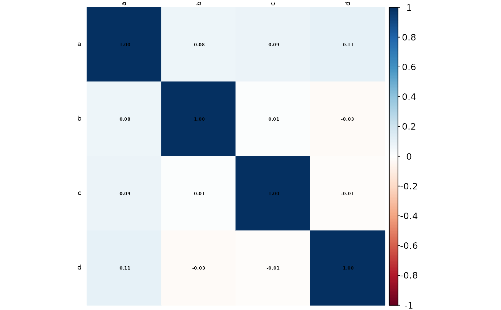

Detects pairs (or groups) of strongly collinear predictors and eliminates
the minimum subset necessary to keep every absolute pairwise correlation
below a user‐defined threshold. Correlations are computed with
stats::cor(); the variables to discard are chosen via the
caret::findCorrelation() algorithm. An optional heat-map of the
correlation matrix is produced with corrplot for rapid inspection.
Arguments
- data
A data frame with candidate predictor variables.
- cols
Optional numeric or character vector specifying columns to consider; defaults to all numeric columns.
- threshold
Numeric in \([0,1]\) specifying the absolute correlation cut-off (default
0.7).- plot
Logical; if
TRUE(default) a correlation heat-map with coefficients is drawn.
Value
A data frame containing the original rows but only the subset of
predictor columns whose absolute pairwise correlations are \(<\)
threshold.
Details
Non‐numeric columns are silently dropped prior to correlation calculation.
When
colsis supplied (numeric or character), only those columns are tested; otherwise all numeric columns indataare used.The names of removed and retained variables are printed to the console for transparency.
Examples
set.seed(99)
n <- 200
df <- data.frame(
a = rnorm(n),
b = rnorm(n),
c = rnorm(n) * 0.8 + rnorm(n) * 0.2, # moderately corr. with 'a'
d = rnorm(n) * 0.9 + rnorm(n) * 0.1 # moderately corr. with 'b'
)
## Remove predictors with |r| ≥ 0.75
df_reduced <- rm_correlated(df, threshold = 0.75, plot = FALSE)
#> Loading required package: ggplot2
#> Loading required package: lattice
#>
#> Attaching package: ‘caret’
#> The following object is masked from ‘package:future’:
#>
#> cluster
#> corrplot 0.95 loaded
#> Variables removed due to high correlation:
#> character(0)
#>
#> Variables retained:
#> [1] "a" "b" "c" "d"
names(df_reduced)
#> [1] "a" "b" "c" "d"
## Visualise the correlation structure & removals at a stricter threshold
rm_correlated(df, threshold = 0.6, plot = TRUE)

#> Variables removed due to high correlation:
#> character(0)
#>
#> Variables retained:
#> [1] "a" "b" "c" "d"
#> a b c d
#> 1 0.2139625022 -0.807846982 0.650125797 -0.374797382
#> 2 0.4796581346 -0.218111933 0.711116292 0.791502263
#> 3 0.0878287050 -2.114401114 0.004480614 -0.412437267
#> 4 0.4438585075 0.428423473 2.227215416 0.434908534
#> 5 -0.3628379205 -1.141739781 -0.125543159 1.224602252
#> 6 0.1226740295 -0.836858998 0.902054935 -0.871712683
#> 7 -0.8638451881 -0.243773848 1.320056254 -0.345253813
#> 8 0.4896242667 -1.353383518 -0.792803431 0.176135083
#> 9 -0.3641169125 -0.521787499 -0.532080300 0.043669962
#> 10 -1.2942420067 -0.981677143 0.094698726 1.289150344
#> 11 -0.7457690454 -0.381601263 0.593766863 -0.702961410
#> 12 0.9215503620 -0.818496919 0.811387953 -0.865580424
#> 13 0.7500543504 1.036041965 -0.154889749 0.603905473
#> 14 -2.5085540159 0.660832038 0.302024231 -0.005629660
#> 15 -3.0409340953 -0.978489027 -0.328651669 -0.230098740
#> 16 0.0002658005 -1.298182392 -0.451828014 -0.979497820
#> 17 -0.3940189942 -0.617235528 1.153473600 0.794975025
#> 18 -1.7450276608 1.577740559 0.986362421 -1.193274152
#> 19 0.4986314508 -1.828086866 0.072314499 0.948141657
#> 20 0.2709537888 -0.570752065 0.034545660 0.015546094
#> 21 1.0989215202 -0.708438424 0.074390059 -0.967271108
#> 22 0.7525134622 2.029016461 0.969941364 -0.204433351
#> 23 -0.0594166874 -0.481741636 -0.812906567 0.613386353
#> 24 -0.3445687942 1.339285774 -1.521778921 1.598021525
#> 25 0.2226682962 2.169145681 1.224421531 1.210405209
#> 26 0.5517863440 0.409396083 -0.643392419 -0.300745739
#> 27 0.6836428231 0.039691530 0.229847678 0.709892509
#> 28 -0.5458794008 -0.343813371 0.355624507 -0.571934294
#> 29 -1.3674361559 0.630276527 -1.130161578 -0.028352429
#> 30 1.4000518384 -0.343912260 1.063305040 0.871019997
#> 31 1.3730539470 -0.811209845 0.294830038 0.455424722
#> 32 0.4502565585 -0.056942981 -2.180347497 -1.866202529
#> 33 -0.1462938556 1.206405098 -0.956821247 1.568519447
#> 34 0.1280972398 1.037521446 0.421405441 -0.641364515
#> 35 -2.2947209470 -1.050242563 -0.549063390 -1.134861960
#> 36 -1.3665689212 -1.797495488 -0.049434890 1.066787663
#> 37 -0.1974795527 -0.321059397 -0.636750346 0.274965749
#> 38 0.0680857821 0.708212248 1.152857109 -0.260535904
#> 39 0.0905034095 -0.495264934 -0.924908407 -0.738133306
#> 40 0.3227599666 1.616276288 0.449927455 -0.228100127
#> 41 0.1329786261 2.561227993 -0.751877061 -0.264193308
#> 42 -1.6792643199 -0.977418403 -0.343279786 0.680948608
#> 43 -0.2784795774 0.130812389 0.048877634 -1.609749291
#> 44 -1.5524109957 -0.011815405 1.333433695 0.655561255
#> 45 -1.3796992546 -1.390950102 -0.445112369 0.900784325
#> 46 -1.3570565902 -0.622261712 -0.142148630 -0.653006082
#> 47 -0.9211371796 -1.713393442 0.190926193 -0.293720228
#> 48 -0.8668177357 1.039269907 -0.040891168 -0.515566490
#> 49 1.6566443862 2.194391754 0.390814442 0.537928411
#> 50 -0.1550797180 0.683113924 -0.039142917 -1.021133417
#> 51 -1.5765524347 -0.273628128 -0.584580667 -0.474777697
#> 52 0.6240825991 -0.113418347 -0.830776415 1.420444534
#> 53 0.3302206836 -0.910787258 1.788622964 -0.379051406
#> 54 -0.3981222565 0.368916320 -0.179034763 0.906949449
#> 55 -1.0813969260 1.138006927 2.056828102 0.526129078
#> 56 -0.0769220578 0.817739261 1.410328679 -0.295980652
#> 57 -0.5255366208 -0.703020340 1.614692870 0.290958760
#> 58 0.3912896549 1.131992120 0.084099825 1.143288321
#> 59 -0.6804532606 -0.211112027 0.290063244 -0.418205020
#> 60 -0.7486969344 0.295145071 0.331548524 1.964807443
#> 61 -0.1629178872 -2.052072814 -0.459430686 -0.220179445
#> 62 -0.1142151552 -0.028222508 0.091257120 0.817359372
#> 63 -0.4446593594 1.183484663 -1.948745176 -0.562317807
#> 64 0.2569591711 -0.788091316 -0.688290303 1.308332891
#> 65 -1.1001371270 -0.924344852 -0.589891934 0.576826697
#> 66 -1.3365758890 0.456810994 0.490251993 -1.367117180
#> 67 0.2048986088 0.174773780 -0.004592439 -1.976070031
#> 68 0.0352873536 -1.062215062 -1.746576012 1.146049825
#> 69 -0.4389125101 -0.257517429 -0.624419828 -0.592714236
#> 70 0.4004058632 -1.168202176 -0.461394866 -1.469301282
#> 71 0.5851713075 -0.761312821 1.728462106 -0.443883476
#> 72 0.4821285395 0.772342633 0.122809963 0.412668093
#> 73 -0.8048338458 -3.055862104 -0.081986939 -0.343549639
#> 74 0.3030771876 -1.927945756 1.317228564 -0.828054249
#> 75 -0.8261757288 -1.059436906 0.531319353 1.291137236
#> 76 0.1414289151 1.335294171 -0.201237223 -1.487686404
#> 77 0.7403572090 -0.404837541 -0.630742223 2.087817928
#> 78 1.3850465519 -1.922389553 -0.597930741 -1.367443054
#> 79 -0.6335774812 -0.749137326 -0.842622899 0.164603334
#> 80 0.2385886379 2.218349265 -1.392532364 -0.672912345
#> 81 0.0366115230 0.243579330 -0.146427740 -0.341992394
#> 82 0.2885260609 0.990870147 0.076567633 -0.270050013
#> 83 -1.1059713404 -0.295372620 -0.793188505 0.265467797
#> 84 0.8922384856 0.562844868 0.711711382 0.882388141
#> 85 1.1814691526 0.653536910 0.639631147 -0.270022572
#> 86 0.3511679293 0.681547318 -0.609925415 -0.936573800
#> 87 0.0630067212 2.059925229 -0.311694322 -1.842616391
#> 88 1.3942617236 1.552772438 -0.471338087 1.457637583
#> 89 -0.0125079211 0.065627141 -0.406243547 0.448278868
#> 90 0.6780764295 1.033924833 -0.270113217 1.527963768
#> 91 -0.0561465767 0.037523005 -0.001820770 -2.716611857
#> 92 0.1359938283 0.775920263 1.243812413 -1.609894693
#> 93 1.8645760164 -1.651111552 0.682410858 1.133165230
#> 94 1.1487083480 0.567341535 0.528533461 0.691236306
#> 95 -0.9399860640 -1.061189814 -0.064917578 -0.092169764
#> 96 -0.0618862729 -0.702986753 0.272246097 0.797822930
#> 97 -0.3760905037 1.010340190 -0.821348704 1.655422951
#> 98 0.2096888497 -0.035467471 -0.125730439 -0.792200836
#> 99 0.7054585816 1.047946134 -0.547982666 0.563164354
#> 100 0.6520884736 1.149473753 -0.205595807 1.916585934
#> 101 -1.5250694192 0.714738653 0.017262295 -0.158439740
#> 102 -0.5009917075 -0.228475376 0.819171635 1.091524651
#> 103 -1.2131812461 -0.469094081 1.303059407 0.491126022
#> 104 -0.6302767538 -0.438436565 -0.159187923 -1.498744447
#> 105 -1.4474855206 -0.612129080 -1.843967136 1.146149701
#> 106 -0.1669083991 -0.459219084 -0.690492015 1.154873526
#> 107 1.5889265008 2.446664259 -0.463056281 -0.249149483
#> 108 -0.2303573511 0.496629911 1.488445287 -0.187946065
#> 109 -0.5733714737 0.835067350 -0.514065090 -0.949795564
#> 110 0.5627325262 -0.611269462 -1.659965991 0.121316731
#> 111 -0.2449161325 -0.791817919 -0.245080701 0.426457288
#> 112 2.0381512544 -0.975005214 0.138732928 -0.439127583
#> 113 -0.2512018341 1.887571548 -0.786058537 0.840822174
#> 114 -2.9986727179 -0.413264520 -1.105834527 -0.348107020
#> 115 -1.1947343769 0.509574813 -0.889391729 -0.705226593
#> 116 0.9664163730 -0.131544424 0.945928787 -0.176948529
#> 117 -1.1869310827 0.233428351 0.685914700 -0.041877026
#> 118 -0.8496439921 -1.413063485 -0.726903287 0.318434375
#> 119 -0.4089894184 -0.606239486 0.477691747 -0.056602192
#> 120 -1.8277389254 1.209582635 -0.376056463 -0.138908465
#> 121 0.5943204228 0.176480544 -0.606191369 -0.381688521
#> 122 0.3793512972 1.400368876 0.969794776 0.364738682
#> 123 -0.9439510184 0.212948305 0.057508744 -0.753350859
#> 124 -1.6630334558 0.346036962 -0.366630881 -0.862124971
#> 125 0.0289771267 -0.002955053 -0.077691115 -0.778015755
#> 126 0.7939752527 -0.741601124 -0.580786250 -1.031851858
#> 127 0.0625096133 0.231565130 -0.394737270 1.106770788
#> 128 1.4110132120 0.927020805 -0.969707251 1.796510531
#> 129 1.5014201353 -1.154760138 0.200204348 0.717153244
#> 130 -1.2444901989 0.580344147 0.933754635 -0.026544341
#> 131 0.4087397283 -0.687280428 -0.073412687 0.637537252
#> 132 -0.2166367198 -0.265012951 -0.300988880 -1.241023708
#> 133 0.8254717883 0.067657823 0.242131006 0.757010730
#> 134 0.9228956361 -1.084889497 0.631342560 0.854507497
#> 135 -0.4337334894 0.888744701 -1.208124948 1.025770131
#> 136 0.0702573471 -1.247957740 0.364020258 -1.146964321
#> 137 0.9461547741 0.827887258 0.670896820 0.156168897
#> 138 0.4121273834 -0.091908079 -0.364680933 1.768532415
#> 139 -1.8441781364 -0.510883114 -0.014784650 0.626431293
#> 140 0.1108751835 0.191300892 1.088202652 0.011468965
#> 141 0.5350701389 0.277804501 0.719199893 -0.899504887
#> 142 1.6215407294 0.444687351 1.151322960 0.813385139
#> 143 0.3036179144 -0.776261021 -0.293370051 -1.070483226
#> 144 0.7598307206 -1.500057239 -0.560314729 -0.430150905
#> 145 -0.5394486888 -0.907332440 -1.598554589 2.166101000
#> 146 -0.6879466901 1.743150070 -0.449125232 -0.581157448
#> 147 -0.2555058925 1.218135342 -0.311854820 -1.475109255
#> 148 0.2998571907 0.453611624 0.265252849 -0.341248964
#> 149 -0.6431632020 -0.316830415 -0.581429374 -0.475944763
#> 150 1.4867612203 -0.616174701 1.747527696 1.767020797
#> 151 -1.6870237067 -0.212870781 -0.318559271 -0.520354602
#> 152 -0.5562257193 -0.370955353 0.759512377 -1.013228142
#> 153 1.3599063504 0.822837282 -1.838800958 -1.077874868
#> 154 1.2304714999 -1.975920841 0.197935545 0.162444951
#> 155 0.5547351585 -2.182746956 -0.251613561 0.321964716
#> 156 -0.7414810274 -0.684540071 -0.053469766 0.095529368
#> 157 0.0739307356 1.168771786 0.216156980 -0.587352404
#> 158 0.5070270747 0.232803930 0.219985877 -0.450762946
#> 159 2.0916015529 -0.438085185 0.055430585 0.533504264
#> 160 0.9776592457 -1.296829761 0.581620843 1.266548177
#> 161 -0.1141156930 0.599487752 0.420022476 0.018526223
#> 162 -0.7959222738 -1.405571780 -1.706830530 -1.541017754
#> 163 1.2505467896 -1.043266704 -0.183143541 2.009311132
#> 164 -0.2693288284 -0.264209774 -0.364165169 -0.009959884
#> 165 -1.6454499974 0.904885627 0.699348076 -0.239202223
#> 166 -1.0211925276 -0.876582288 -1.376008858 -0.031696336
#> 167 0.6028184662 0.976247277 -0.481627860 0.677356523
#> 168 0.4316599545 -0.368044455 -0.274129654 -0.634466587
#> 169 0.9102138723 -1.049078189 -0.637266681 -0.315983219
#> 170 -1.1705414234 1.995245775 0.671359715 1.438758524
#> 171 1.3417476052 1.139258983 0.514289405 -1.363012833
#> 172 -0.7245769954 -1.233795502 -0.655386032 -0.337954409
#> 173 0.5933622825 -1.345174505 0.523932656 0.094143151
#> 174 0.6320557290 -1.540945241 0.017805199 -1.129231294
#> 175 -0.8257641388 -0.725528699 0.572100477 0.641618828
#> 176 0.7233372277 1.785506505 0.398944485 0.993929622
#> 177 -1.0324548762 0.817949349 0.441126571 -1.770953219
#> 178 1.8084703147 0.160281265 -0.381984275 -1.227745539
#> 179 0.6300944224 -0.614197384 0.324359110 -0.884928272
#> 180 0.6233314446 -0.778021850 1.222044371 1.164502228
#> 181 -0.7610883876 -1.419423114 -0.589431204 -0.241244131
#> 182 -1.9397141618 0.335252251 1.432662115 -1.678205247
#> 183 -0.4407107719 -1.574354698 -0.061522910 1.206843646
#> 184 -0.8107199396 -2.178561777 0.155391339 0.103968140
#> 185 -1.2164189903 0.976665627 0.902658794 -0.404170266
#> 186 -1.6276626733 0.583590327 -1.628925887 0.342479362
#> 187 -0.4911452074 -0.287677165 -0.032139842 -1.338709265
#> 188 1.8689793225 0.483488310 -0.182627289 -0.904331310
#> 189 -0.2203588763 1.692553675 0.871157172 -1.119801473
#> 190 1.0795769503 2.022218786 -0.168099909 -0.462503044
#> 191 0.5366196336 1.466557445 -0.866852229 2.217093291
#> 192 1.1745433888 1.104235820 -1.200568913 1.241466944
#> 193 -1.7031399715 -1.119896794 -0.890987719 0.711730257
#> 194 -1.0800061191 1.512028563 -0.912153725 -0.454106551
#> 195 -0.9178092284 -0.296605674 -0.468926803 0.296186132
#> 196 -1.0859962355 -1.638759250 0.286057604 0.180177172
#> 197 0.6224785388 -0.198922467 -0.560395891 -1.578276646
#> 198 -2.0417173430 -0.643634464 0.294022730 0.189031377
#> 199 0.1973659857 -1.085641891 1.194930966 1.637702766
#> 200 -0.5792824248 -0.172023228 -0.590639727 -0.549039023